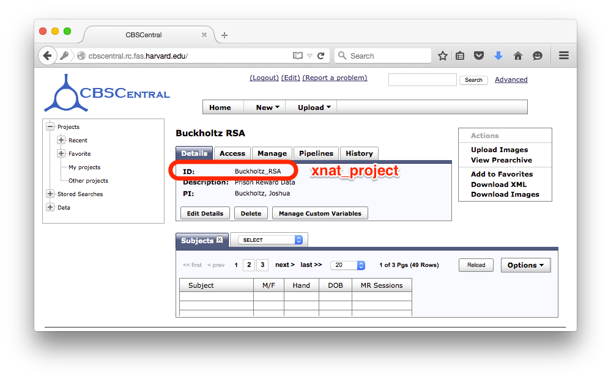

Tutorial¶
The following instructions will help you access images and logfiles from our tutorial data, and configure and run our basic fMRI processing and modelling.
- Choose directories and paths in project.py with
fitz setup. - Specify experiment processing parameters in {experiment_name}.py.
- Download the requested workflow(s) with
fitz install - Specify which subjects to run with subjects.txt
- Download and prepare images. (
fitz run -w xnatreconor withArcGet.pyanddcmstack) - Add preproc and common model options to {experiment_name}.py
- Copy logfiles and create design file
- Create model file {experiment_name}-{model_name}.csv
- Run workflows:
fitz run -w preproc onset model
Note
In this tutorial, files to create are bold, important directories
are italicized, and commands to run are in monospace or large
code blocks.
Setup Directories and project.py¶
There are 3 important directories in a standard project:
- fitz dir
- Configuration files and some scripts.
- data dir
- Raw data and logfiles.
- analysis dir
- Outputs of the workflows and processed data.
To begin, create a directory for your project/study, and a config directory
inside it called “fitz”; this will hold configuration and any scripts you want
to write. You can create both of these at once by typing
mkdir -p <study>/fitz. Finally, cd into it run fitz setup to answer
some questions about where you want your studie’s processing directories to
live. Open a Terminal and type:
cd /ncf/jwb/studies/PrisonReward/Active/Analyses
mkdir -p spmFMRI/fitz
cd spmFMRI/fitz
fitz setup
The script will ask questions to help you get started. You can just type enter after each one to accept the defaults:
Let's set up your project.
Please enter values for the following settings (just press Enter to
accept a default value, if one is given in brackets).
Please use relative paths.
> Project name: PrisonReward
> Default experiment: DD
> Data tree path [../data]:
> Analysis tree path [../analysis]:
> Working tree path [../analysis/workingdir]:
> Crashdump path [../analysis/niypype-kastman-crashes]:
> Remove working directory after execution? (Y/n) [y]:
Finally, set an environment variable to tell fitz where to look for project.py, <study>.py, etc...:
export FITZ_DIR=<path/to/study/fitz>
Note
From here on out, the tutorial assumes you are running commands from the FITZ_DIR.
Setup Experiment File DD.py¶
Experiments are configured by creating a file called {experiment_name}.py.
This is just a regular python file that defines options and variables used
by the workflows.
Use a text editor to edit the file DD.py.
# On linux, this might look like:
gedit DD.py # linux
# Or on a mac
open -a TextEdit DD.py # Mac
Paste the following setting options into DD.py to tell fitz the name, version and path to the workflow you want this experiment to use:
# Workflow Parameters
# --------------------
workflow_src = "git@ncfgit.rc.fas.harvard.edu:kastman/nwlabs_fitz.git"
workflow_version = "0.0.1-dev"
Install Workflows¶
Install the workflows requested by the experiment file. This downloads the exact version of the workflow as specified in {experiment}.py and copies it into the fitz directory. You only have to do this once at the start (or any time that the workflow changes, which should ideally be never).
fitz install
TODO make fitz clone to the FITZ_DIR (instead of pwd) and make it read pipelines there (instead of the fitz install dir)
Setup subjects.txt¶
A subjects.txt file in the fitz directory is used to list all the subjects that should be included. Since we’re only processing a single subject you can skip this step now and use the “-r sub001” option on the command line, or create a text file with one line:
M87100094
Note
If desired, other groups of subjects may also be specified by creating
subjects-{group_name}.txt files that may be used in
fitz run --group group_name.
Note that when downloading from CBS Central, the subject id must be exactly the same as the “MR Session” id for the download to work correctly. I hope to fix this, but for the time being use the MR Session as your subject identifier.
Prepare images in the data directory¶
For this tutorial, you will download dicom data from the CBS Central xnat server. We’re going to use one real subject from the PrisonReward study as an example.
Image download and conversion to nifti is a special type of workflow - the output files are put into data/{subject_id}/images directory instead of analysis, because the converted niftis are really more like inputs that processing steps.
To configure the xnatconvert workflow to know which server to connect to, add the following lines to the experiment file DD.py:
# Xnat Download and Convert
# --------------------------
xnat_project = 'Buckholtz_RSA'
struct_pattern = 'mprage%RMS'
func_pattern = 'ddt%'
server = 'https://cbscentral.rc.fas.harvard.edu'
If you’re working on your own study, you’ll need to change and specify these so that the patterns match up. The xnat_project is found on the main project page next to “ID:”.
The struct and func patterns search the “Series Description” of each image to find datasets to download. In the example above, the struct pattern matches the scan with a description of “mprage_3e_15 RMS” (this is the root mean square anatomical T1) and the task matches “ddt” - the Delay Discounting Task.

This is a database-style search so you use ‘%’ for a wildcard instead of ‘*’.
You can now run the fitz workflow to download data:
fitz run -w xnatconvert
Note that if you get a “No Images were downloaded” error you probably set up either the project’s ID or the patterns incorrectly.
Aside: CBSCentral NRG Tools¶
If you just want to quickly grab data and are using the Harvard Neuroinformatics Research Group (NRG) xnat instances CBSCentral or GSPCentral, you can use ArcGet.py to download it and dicomstack to convert it to nifti format. This does the same thing as the fitz xnatconvert workflow, but is (for better or worse) a little more flexible.
# Change to the data directory
cd ../data
# Use ArcGet.py to download T1 & BOLD dicoms from CBS Central
ArcGet.py -a cbscentral -s M87100094 -r MPRAGE,BOLD
# Create a folder for the .nii images
mkdir ../data/M87100094/images
# Use dcmstack to convert images from DICOM to Nifti format
dcmstack --embed-meta --dest-dir ../data/M87100094/images --output-ext .nii ../data/M87100094/RAW
# don't forget to change back to the fitz directory when you're done
cd ../fitz
Note
ArcGet.py is currently setup & available only on ncfnx / ncf workstations, not the Buckerville MacPro or laptops.
Setup Workflow Preprocessing Options¶
Next, configure the pattern for choosing functional and structural images, and add any other preprocessing options.
Add these config variables to your DD.py experiment file:
# Preproc Parameters
# -------------------
func_template = "{subject_id}/images/*dd*"
anat_template = "{subject_id}/images/*mprage*"
## TODO Add sanity check that ensures these are true
## TODO Add motion_correct = True
## TODO Print default options
n_runs = 3
TR = 2.5
temporal_interp = True
interleaved = False
slice_order = 'up'
num_slices = 33
smooth_fwhm = 6
hpcutoff = 120
frames_to_toss = 0
# Default Model Parameters
# -------------------------
bases = {'hrf': {'derivs': [0, 0]}}
estimation_method = 'Classical'
input_units = output_units = 'secs'
The func_template and struct_template must be set, even if options for func_pattern and struct_pattern were set already for xnat_convert. This is because the xnat_convert is not the only way to convert nifti files, and the preproc workflow doesn’t “know” about the xnat_convert workflow. It’s important to be able to set them separately, but I might add an option to compbine them in a future release.
These “template” options are used to grab nifti images from the data directory depending on how the file names were created - usually using the series description from the dicom header. Check out your data directory to look at the images and make sure you’re grabbing the right ones.
TR is the Repetition Time, which should be specified in seconds (it is often
shown in scan parameter sheets in ms). The number of slices can be found on
the parameter sheet or by looking at the functional images with tools to view
the nifti header (fslhd, 3dinfo, or SPM --> Display Image).
One additional caveat is that slice timing can be confusing - the scan parameter sheets from our Siemans scanner always list a Multi-slice mode of “Interleaved”, even when slices are acquired sequentially. The correct value to look at is the Series value directly below it, which will either be “interleaved”, “ascending” or “descending”. Finally to completely convince yourself, you can look at the Siemans DICOM header field CsaImage.MosaicRefAcqTimes to see slice acquisition times. Lots more helpful info is at Harvard CBS FAQ slice info.
Finally, set some default options for modeling. In this case we will use SPM defaults for the hemodynamic response functions (‘hrf’) in our general linear model, and will specify the unit for our design files will be in seconds (as opposed to TRs).
Copy logfiles and create the Design File¶
You have to create a plain-text “design file” in csv format that specifies
the condition and onset time of stimuli as they were shown during the scan.
This file should live at <data_dir>/<subject_id>/design/<design_name>.csv
and should have columns for onset times, durations, conditions and parametric
modulators to use for your fMRI models. Each row in this file corresponds to an
event, where the term “event” is used broadly and can mean a “block” in a block
design experiment.
At a minimum the design file should contain columns for “run”, “condition”, and “onset”; it may also have columns for duration and “pmod-” columns that will be entered as parametric modulators. Note that the ‘pmod-‘ columns correspond roughly to ‘value’ columns in a standard lyman design file, but are not the same thing. See Mumford, Poline and Poldrack 2015 for a discussion on how parametric regressors and orthogonalization are handled between different fMRI packages. (TL;DR, Fitz enters these columns as pmods in SPM, while Lyman enters values as amplitudes.)
An extremely simple design file would look like:
run, condition, onset
1, sooner, 0
1, sooner, 12
2, sooner, 0
2, later, 12
For simple designs where most of what you want already exists in your logfiles,
fitz includes a simple script called textOnsets2Long.py that will select
and split up your full logfile into a “long” style csv with appropriate
columns. This assumes that each row of your logfile is a trial, and that there
are columns that list the trial type (condition), trial time (onset), and trial
duration (this defaults to zero), and additional values to use for parametric
modulators (i.e. which option a particpant chose, the value of their choice).
If your logfiles don’t have appropriate columns already, you won’t be able to use the script helper and will have to make your own design files, or create new logfiles that include these columns.
To use it, specify which of the column names in your logfile map to the
appropriate columns (condition, onset, duration, pmod) and list the logfiles.
Make sure that your logfiles sort correctly when you list them with ls,
because the run column will be added based on the filenames’ alphabetical order.
For this DD task, we will map the following columns from the logfiles and create a model file in data/{subject_id}/design/DD-1.1.Choice.py:
| logfile column name | design column name |
|---|---|
| choice | condition |
| cuesTime | onset |
| trialResp.rt | duration |
| choiceInt | pmod-ChoiceInt |
# Make folders for the logfiles and design files
mkdir ../data/M87100094/logfiles ../data/M87100094/design
# Copy the logfiles for the tutorial subject to the data directory
cp /ncf/jwb/studies/PrisonReward/Active/Subject_Data/RSA_DD_Active/1819_2012_Aug_22_????.* ../data/M87100094/logfiles/
# Create the design files using the textOnsets2long script (or do it yourself)
textOnsets2long.py ../data/M87100094/logfiles/*.csv --out ../data/M87100094/design/DD-Model1.csv --condition-col choice --onset-col cuesTime --duration-col trialResp.rt --pmods-col choiceInt
Models may be as complicated (or simple) as you want, and you should feel free
to create the csv yourself without the help of textOnsets2long.py.
Waskom’s Lyman Documentation also has more info on the design file and additional regressors file where post-convolved regressors for each TR may also be added to the model.
Model Options (Design File and Contrasts)¶
Information about specific models are listed in their own python files <experiment_name>-<model_name>.py. If you want a specific order of models (for example you’re creating models at different onset times) you should list your model numbers explicitly.
Paste the following lines into a new file called DD-1.1.Choice.py to specify two contrasts - one for the main effect of all trials and one for the parametric modulator. The column names (e.g. ‘sooner’, ‘later’) must be values in the
design_file = 'DD-1.1.Choice.csv'
contrasts = [
('all trials', ['sooner', 'later'], [1, 1]), # 1
('choice', ['soonerxchoice^1', 'laterxchoice^1'], [1]) # 2
]
Run Workflows¶
- Preproc
- Performs slicetime correction, realignment, coregistration, normalization and smoothing.
- Onsets
- Converts the design file to binary Matlab .mat SPM-style multiple conditions files.
- Model
- Calculates artifacts, specifies a model design and estimates the model and contrasts.
fitz run -w preproc onsets model --model 1.1.Choice
Note
N.B. There is no default model, so you must specify which one you
want to use with the --model flag.
Bonus: Alternative Models¶
Exercise: Create a new design file with a differnet onset, and create a new model file called DD-Model2.py that uses it.
| design column name | condition | onset | duration | pmod-ChoiceInt |
|---|---|---|---|---|
| logfile column name | choice | cuesTime | trialResp.rt | choiceInt |